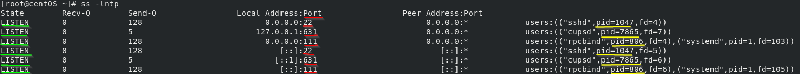

ss command
ss command is a tool that is used for displaying network socket related information on a Linux system.
ss displays more detailed information that the
netstat command that has been deprecated
OPTIONS:
-l: only
listening sockets
-n: do
not try to resolve service names that are using the ports
-t:
tcp sockets
-p: process(PID) using socket